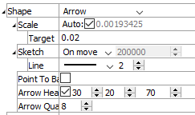

Arrow Shape Controls
This shape style is used when the item is to be represented as a contoured vector field.
Shape -> Arrow: render the item with arrows. This setting requires that the item will be colored as a vector quantity.
Scale: Automatically (checked) scale the plot item. If unchecked, the adjacent field is enabled to allow specification of item size.
Target: Set the target scale, as a percentage of screen size, when “Auto” is checked.Sketch: Specify to sketch, with options for “Above”, “On Move”, or “On.” Sketching is performed in the “Above” setting if the number of items in the plot item is above the number in the adjacent field (which may be edited when “Above” is selected. Sketch mode is used in “On move” if the plot item is moved in some way (rotated, magnified, etc.). Sketch mode is always on when “On” is selected.
Line: Set the line style and the line width (in a range from 1 to 10, in pixels) to use when rendering in sketch mode.Point to Base: Invert (checked) so that the arrow points at (rather than emanates from) the item’s point source.
Arrow Head: Include arrow heads (checked), with sizing controls for arrow head length, arrow head radius, and shaft thickness, respectively.
Arrow Quality: Specify the number of edges to use when rendering the circular portion of the arrow head (larger number = more circular).
| Was this helpful? ... | UDEC © 2018, Itasca | Updated: Mar 15, 2024 |